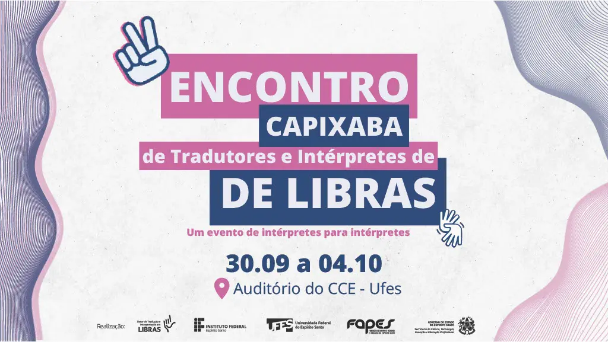
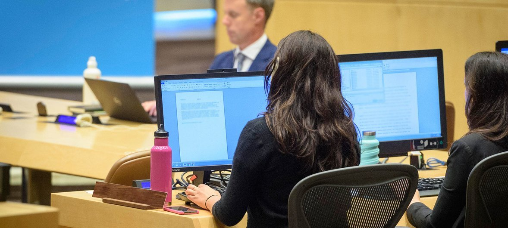
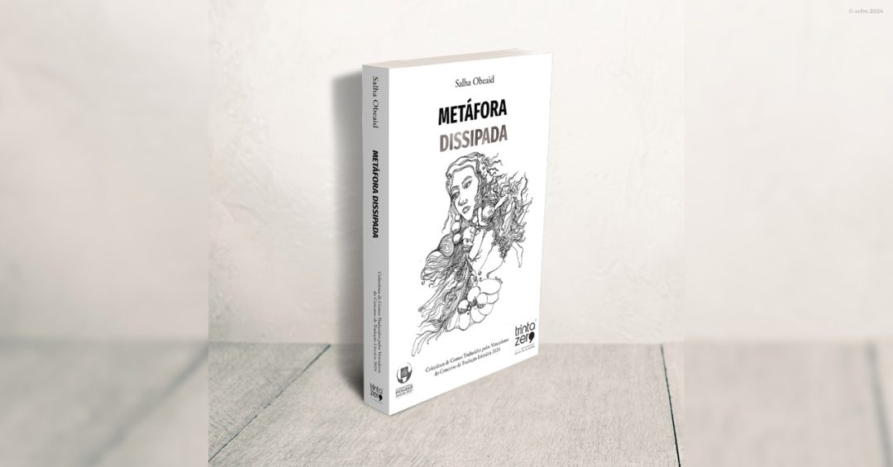

Principais notícias do PortalDia internacional da traduçãoONU celebra Dia Internacional da TraduçãoA Ufes recebe, a partir da próxima segunda-feira, 30, o II Encontro Capixaba de Tradutores e Intérpretes de Libras (II Encatils). Parceria da Ufes com o Instituto Federal de Educação, Ciência e Tecnologia do Espírito Santo (Ifes), o evento será realizado até o dia 4 de outubro em formato híbrido: presencialmente, no auditório do Centro de Ciências Exatas (CCE) Encontro Capixaba em homenagemAs Nações Unidas marcam neste 30 de setembro o Dia Internacional da Tradução. Com centenas de tradutores em seu Secretariado, a ONU atribui grande importância ao papel que desempenham no fortalecimento da diplomacia e do multilateralismo. Celebração Do Dia Internacional da Tradução Literária: Lançamento do Livro “Metáfora Dissipada”O Auditório do Centro Cultural Franco-Moçambicano acolhe, na Segunda-feira, 30 de Setembro, às 17h, um evento especial em celebração ao Dia Internacional da Tradução Literária.  |
Dia internacional da Tradução |